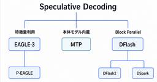

npaka
https://note.com/npaka
プログラマー。iPhone / Android / Unity / ROS / AI / AR / VR / RasPi / ロボット / ガジェット。年2冊ペースで技術書を執筆。アニソン / カラオケ / ギター / 猫 twitter : @npaka123
フィード


Gemini 3.8 Flash ・ Gemini 3.8 Flash Cyber の概要 1
1
npaka
「Gemini 3.8 Flash」「Gemini 3.8 Flash Cyber」の概要をまとめました。・Introducing Gemini 3.8 Flash and 3.8 Flash Cyber続きをみる
3日前


GLM-5.3-Flash × Blender - 自律制作の仕組みを事例から探る
npaka
「GLM-5.3-Flash」による「Blender」自律制作の事例から、その仕組みを探ります。続きをみる
4日前
Claude Fable 5.1 と Mythos 5.1 の概要 2
npaka
「Claude Fable 5.1」と「Claude Mythos 5.1」の概要についてまとめました。続きをみる
4日前

ローカルLLMを高速化する投機的デコード - MTP / EAGLE-3 / DFlash / DSpark 2
npaka
ローカルLLMを高速化する「投機的デコード」についてまとめました。続きをみる
4日前

Ornith-1.5 の概要
npaka
「Ornith-1.5」の概要をまとめました。・Ornith-1.5: From Self-Scaffolding to Self-Improvement続きをみる
15日前
Tripo P2.0 の概要
npaka
「Tripo P2.0」の概要をまとめました。・Tripo P2.0 Preview: A Major Breakthrough for Production-Ready 3D Assets続きをみる
15日前
【書評】 Claude Cowork スゴイ活用術
npaka
生成AIを仕事で使っていても、実際には「質問して答えをもらう」使い方にとどまっている人も多いかと思います。そんな使い方を一段進めてくれるのが、「Claude Cowork」です。今回紹介する『Claude Cowork スゴイ活用術』（AI部 著）は、Coworkの基本から実践、自動化、組織導入までを体系的にまとめた一冊です。続きをみる
15日前
GEN-1.5 の概要
npaka
「GEN-1.5」の概要をまとめました。・GEN-1.5: Embodied Foundation Models are One-Shot Learners続きをみる
16日前
AIの進化によってBlenderによる3D制作はどう変わるのか
npaka
最新のAI研究とAIツールをもとに、AIによってBlenderの使い方と役割がどのように変わるのかを整理します。続きをみる
21日前